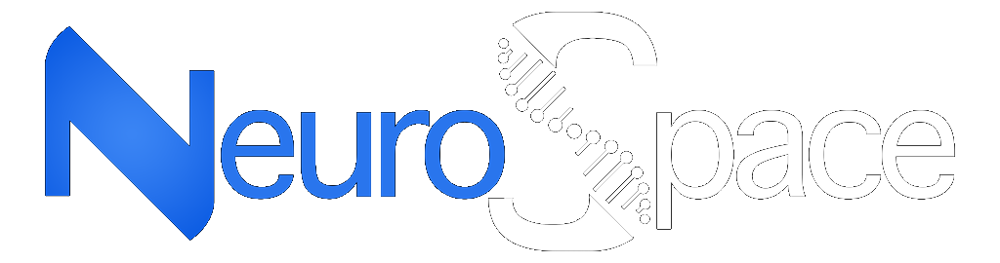
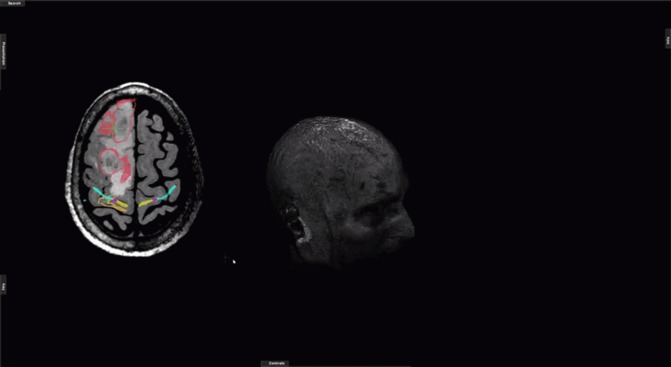
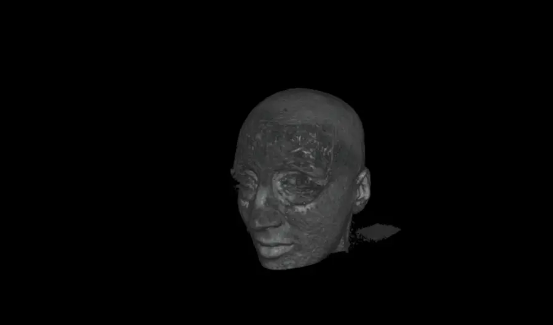
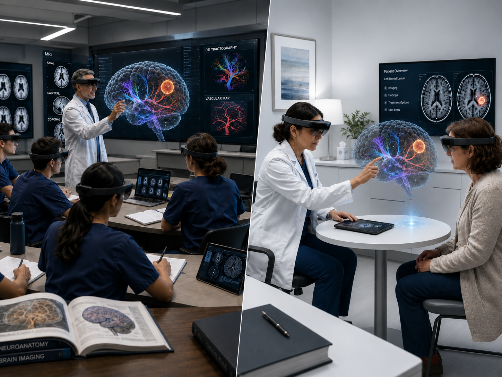
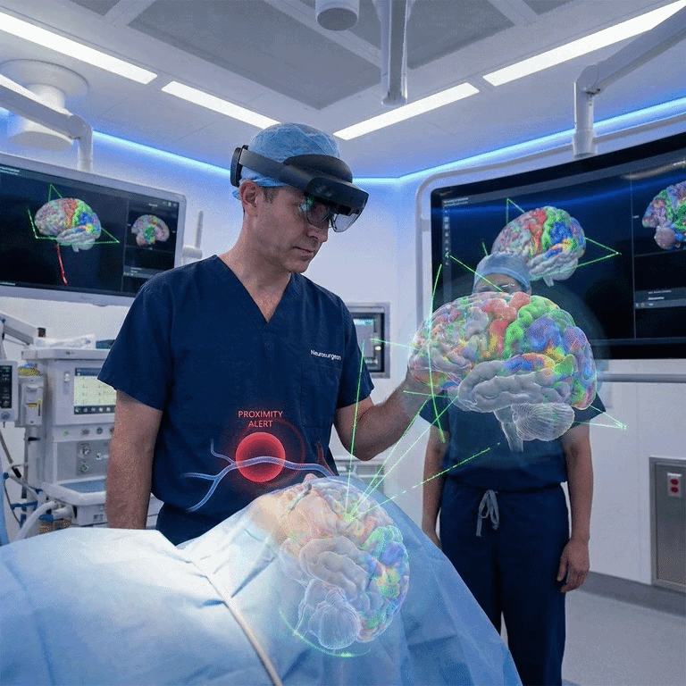

Neurospace reveals not only where to operate, but how every decision may shape the outcome.
Neurospace redefines how neurosurgeons see, plan, and operate.
It doesn’t just visualize anatomy; it understands it.
By merging AI, Augmented Reality, and Cloud Computing, Neurospace transforms surgical planning into a predictive science and the operating room into a connected ecosystem.


In the delicate world of functional neurosurgery, accuracy is the difference between impairment and restoration.
Neurospace turns uncertainty into foresight, transforming every millimeter of brain tissue into a map of insight, safety, and control.
Each module in the system is designed to empower surgeons with the clarity of data and the intuition of experience.
Every pixel tells a story, but only intelligence can interpret it.
Neurospace empowers radiologists to see beyond the grayscale, revealing the logic, language, and life hidden within every scan.
It doesn’t just analyze; it understands.
Radiation therapy begins long before the beam.
It begins with understanding, of anatomy, of proximity, of consequence.
Neurospace delivers that understanding through a unified pre-operative platform built for oncologists, surgeons, and radiologists who demand absolute certainty before treatment planning even starts.
Medicine is built on understanding. But understanding looks different depending on who is asking the question.
A physician may need to explore anatomy in clinical depth.
A medical student may need to understand why it matters.
A patient may simply need to understand what is happening inside their own body.
Neurospace Education Space transforms the same medical information into an experience designed for each of them.
Combining real clinical imaging, interactive 3D visualization, augmented reality, collaborative learning, and personalized communication tools, Education Space creates a shared environment where medicine can be explored, taught, demonstrated, and understood.

The operating room is where information becomes action.
The Neurospace XR OR Space brings imaging, planning, collaboration, and education directly into the surgical environment through Mixed Reality and spatial computing.
Instead of looking away from the patient toward separate monitors, surgeons can access critical information within their field of view, creating an assisted surgical experience where digital intelligence complements physical anatomy in real time.
From image-guided procedures and spatial visualization to remote collaboration and surgical education, XR OR transforms the operating room into a connected, interactive workspace built around the surgeon.

When Experience Meets Artificial Insight.
Seamlessly ingest and overlay MRI, CT, PET, and DTI data into a single coherent volumetric model.
AI algorithms simulate tissue reaction and brain shift before the procedure begins.
Step inside the patient's anatomy with your team using advanced augmented reality headsets.
Direct integration with hospital systems ensures no disruption to your existing data pipeline.
Military-grade encryption for patient data with instant global access for authorized personnel.
Train residents with identical holographic replays of complex surgeries.
Medicine should not be limited by walls, borders, or time zones.
With Neurospace Teleportal, every consultation, collaboration, and surgical plan exists in one shared digital space, where distance becomes irrelevant and expertise becomes universal.
Neurospace doesn’t just connect people.
It connects presence.